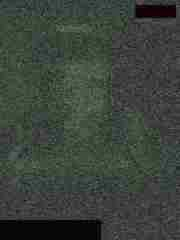
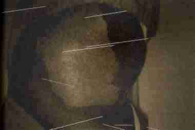
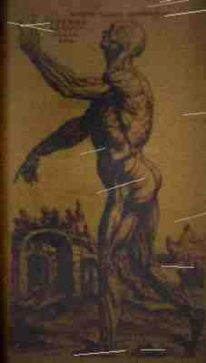

that doesnt make sense. im sorry. i can barely think. the klonopin is making my thoughts feel like theyre underwater but my heart is still going so fast. i didnt know your heart could do this. its been almost four hours and i can feel my pulse in my teeth. i keep checking that all my fingers are still here. they are. i counted. ten. all ten. i dont know why i keep counting them.
ok. ok. ok.
what happened:
i went back to the school at about 9:15 PM. the janitor staff finishes at 9 on fridays. i have been tracking their schedule for two weeks. i brought ryans camcorder (a panasonic pv-l559 with nightshot), a maglite flashlight, eight AA batteries, the lockpick set i ordered from that catalog, and a granola bar. i dont know why i brought the granola bar. i thought i might get hungry. thats how normal i thought this was going to be. i brought a snack. like i was going to the movies.
i entered through the loading dock door on the east side. the latch has been broken since september and nobody has fixed it. the parking lot was empty. the streetlights on lexington were buzzing. a normal friday night. i could hear traffic on marshall avenue two blocks south. a car alarm going off somewhere over on dale street. the world being the world. i want to write all of this down because these were the last normal things. the last things that made sense.
i went down the main stairwell to B1. past the storage rooms and the old locked maintenance closets. past the original cafeteria from 1912 (you can see the green and white checkered tile through a gap in the wall - still perfect after 85 years, not a single crack, like time stopped in that room). past the boiler room where you can hear the gas jets hissing. down to the end of the B1 corridor where the ceiling gets lower and the cinderblock walls change to poured concrete. then down the narrow stairs to B2.
the B2 corridor is about 40 yards long. no lights work past the first 10 feet. flashlight only. the walls are 1912 poured concrete and you can see names scratched into the surface by the workers who built it. ANDERSON. HAUGEN. PETERSON. DAHL. regular guys. regular scandinavian immigrant guys who poured concrete and built a school and had no idea what was underneath them. what they were sealing in.
the steel door at the end of the corridor was how i left it. lock still picked. nobody had been down here. nobody comes down here. the temperature drops about fifteen degrees between B1 and the end of B2. your breath fogs. but the steel door was warm. like something on the other side was breathing on it.
i opened the door.
the smell. god the smell. last time it was bad. tonight it was a wall. copper and wet limestone and something sweet underneath that was so thick i could taste it. like putting a penny in your mouth and then drinking honey. like licking a wound. and underneath that a smell i dont have a word for. the closest i can get is: it smelled like the inside of a body. not a dead body. a living one. the hot wet smell of the inside of a living thing. like sticking your face into an open surgery. like the air itself was organ tissue. warm and intimate and ALIVE. and sweet. horribly sweet. the sweetness made it worse because it made you want to breathe deeper.
i went down the 14 concrete steps to the landing. camcorder recording. nightshot on. flashlight steady. i was being scientific. i was being precise. i was a researcher. i was going to document everything and then leave and then tell someone. that was the plan. that was the stupid stupid plan.
the cracked concrete seal was so much worse. three days ago the main crack was about 4 inches wide. tonight it was at least ten. new fractures had spiderwebbed out from the main fissure in every direction. the concrete around the edges wasnt just crumbling - it was soft. i touched it and my finger sank in a quarter inch. concrete does not get soft. the surface was warm and slightly damp and it gave under pressure like skin over a bruise. the floor was sweating. little beads of moisture on the concrete that were warm to the touch and slightly viscous. not water. something the consistency of tears.
and i could hear the breathing.
not through my ears. i want to be clear about this. i was not hearing sound waves in the air vibrating my eardrums. it was coming through the floor. through the concrete. up through the soles of my shoes and into the bones of my feet and my shins and my femurs and my pelvis and my spine and my skull. each exhale lasted about 15 seconds. each inhale about 15 seconds. one full breath every 30 seconds. it went through me like a wave. like standing in the ocean. and each time it breathed out i felt warm. safe. the way you feel safe when you can hear your mom breathing in the next room when youre little and its nighttime and youre scared. that kind of safe. and i knew that was wrong. i knew feeling safe was the most dangerous thing i could feel. but i couldnt stop.

still frame from camcorder - panasonic pv-l559 nightshot mode
11/14/97 approx 10:04 PM - looking down into main fissure
this is the last usable frame i was able to grab before i dropped
the camera. in the original video you can see movement in the lower
right. i dont want to describe what is moving. the camera is still
down there.
i knelt down next to the main crack. i pointed the flashlight in. i put my face close to the opening. close enough to feel the air coming out of it against my cheek. warm. moist. it smelled like the inside of a mouth.
what i saw through the crack:
below the concrete seal is a room. the drop from the bottom of the concrete to the floor is about 6 feet. the room is large - the flashlight beam died before it reached any wall. the floor is poured concrete like everything else down here but it was covered in a thin film of moisture. not puddles. a film. like the floor was a membrane. like skin after a fever. the surface caught the flashlight and shimmered slightly and i realized the film was moving. slowly. barely. like breathing. the floor was breathing with the same rhythm i felt in my bones.
there were grooves worn into the concrete. deep smooth channels going in circles around a central point i couldnt see from my angle. something has been dragged around and around and around that center point. the grooves are more than an inch deep in places. not cut. WORN. something heavy moving in the same circle for years. for decades. patient and methodical and unending. like pacing. like a dog on a chain. like something waiting and counting every step until it can stop.
and then i saw it.
it was at the far edge of the flashlight beam. about 20 feet from the crack. at first i thought it was a pile of wet fabric. or a mound of something biological. like organ meat. like a placenta. it was slick and it caught the light the way internal organs do. wet and shiny and a color that isnt a color you see on the outside of things.
then it moved.
slowly. so slowly. the way something moves that has nowhere to be and all the time in the world. it was unfolding itself. it had been compressed into a shape like a fist, tight and compact, and now it was opening up. like a hand relaxing. like a flower if flowers were made of meat.
i need to describe it exactly. i need to be specific. i need this to be a record.

i know this is not the thing in the room. this is from the log book. from 1943.
but the musculature. the exposed tissue where skin hasnt formed yet.
this is what it LOOKS like. this is the closest reference i can give you.
imagine this but WRONG. imagine this but with too many ribs and skin that breathes.
the body was approximately human in proportion. approximately. but the way a childs drawing of a person is approximately human - the right number of parts in roughly the right places but wrong in ways that make your eyes slide off it. the torso was too long by about a foot and a half. not stretched. GROWN. like an extra section of ribcage had been inserted between the chest and the pelvis. i could see the ribs through the skin and there were too many of them. i counted. i counted because i was being scientific and because counting gave me something to do besides scream. i counted 19 ribs on the left side. humans have 12. the extra ribs were thinner, newer-looking, like they were still growing. like they had budded off the existing ones.
the skin. i need to talk about the skin. it was the color of a bruise at every stage. purple and green and yellow all at once, mottled, like the entire body was one continuous injury. but it was THIN. translucent. i could see things moving underneath it. not just bones. tubes. vessels. things that pulsed. and the pulsing was not like a heartbeat. it was arhythmic. random. different parts of the body pulsing at different times like they each had their own circulation. their own separate life. the skin was covered in a film of moisture that caught my flashlight and i could see that the surface of the skin was not smooth. up close, even from 20 feet, i could see it was textured. covered in something. it took me a long time to understand what i was looking at. pores. it was covered in pores. open pores. thousands of them. each one slightly open and slightly wet and i realized they were not pores. they were mouths. tiny mouths. each one no bigger than the head of a pin. and they were all moving. all breathing independently. all tasting the air.

this is the closest thing i can find to what the skin looked like
but imagine the texture MOVING. imagine every pore opening and closing.
imagine it breathing through a thousand tiny mouths at once.
the hands. it had hands. two of them. in approximately the right place. but each hand had seven fingers. the fingers were the length of a human forearm. each one moved independently of the others with a fluid boneless dexterity like tentacles. like each finger was a separate animal that happened to be attached at the palm. the fingers were not straight. they curved and recurved and felt the wet floor the way a tongue explores the inside of a mouth. constantly. gently. like they were reading braille written in the moisture. and the fingertips. the fingertips were flat and round and i realized they looked like the pads of a humans fingers. like fingerprints. they had fingerprints. human fingerprints. on fingers that were 14 inches long and had no bones and moved like worms.
the joints were wrong. the arms had at least four points of articulation each. not just shoulder elbow wrist. extra joints. joints in places where joints dont exist. the arms could bend in directions that made my stomach lurch. at one point it reached behind itself and its arm bent BACKWARDS at what should have been the elbow, the forearm folding up against the back of the upper arm, and the geometry of it was so wrong that my vision went grey at the edges and i thought i was going to pass out. human brains are not supposed to see joints bend that way. my brain rejected it the way your body rejects a transplant. i felt physically ill. i felt it in my stomach. looking at the wrong angles of its body made me nauseous the way a concussion makes you nauseous. something fundamental in my visual processing was being violated.
it stood up.
not the way a person stands up. it didnt push itself up with its hands or shift its weight to its legs. it UNFOLDED. every joint extending simultaneously. like a complex piece of origami being reversed. one second it was compressed on the floor, the next it was vertical, and the motion between was so smooth and so continuous that it didnt look like movement. it looked like growth. like watching a plant in a time lapse. it went from flat to standing in about two seconds and it made no sound at all.

standing. this is what it looked like standing.
not exactly. but the proportions. the exposed muscle structure under translucent skin.
the way the body is a body but NOT a body. an approximation. a study of what a body IS.
it has been PRACTICING being a person for 54 years.
it was tall. very tall. it had to hunch forward and tilt its head sideways because the ceiling was too low. i estimated eight feet. maybe more. the spine curved in a way that suggested it could be taller if it wanted to. the spine. i could see the spine through the translucent skin of its back. too many vertebrae. at least 40. and they were not uniform. some were large and some were small and some were shaped wrong, flattened or triangular or fused together in pairs, like the spine had been assembled from parts that did not originally belong together. like spare parts. like practice.
the legs were human legs. perfectly human. the right length, the right proportions, the right musculature. smooth skin, normal color, a little bit of dark hair. male legs. young. i would guess late teens or early twenties. they looked like they had been taken from a living person and attached. they looked like they were still alive. the skin of the legs was warm and pink and the skin of the body above the waist was bruise-purple and translucent and they met at the hips in a seam. a visible seam. where the human skin and the other skin met there was a ridge of scar tissue, puffy and pink, and it was FRESH. the scar tissue looked new. days old. like the legs had been attached recently. like they were an upgrade.
the face.
the face was mounted on the head the way a mask is mounted on a wall. flat. affixed. it did not wrap around a skull the way a face should. it was the face from photograph 7. margaret svenssons face. small features. blonde hair that hung limp and wet. scandinavian bone structure. pretty. she had been pretty. it was a pretty face and it was ALIVE. the skin was warm-colored and the cheeks were slightly flushed and the lips were pink and the eyes were blue and wet and they moved. the eyes moved. they tracked. they found me through the crack in the concrete and they focused on me and i could see intelligence in them. not animal intelligence. not human intelligence. something else. something patient and huge and ancient that was looking at me through a pair of blue eyes it had been practicing with for 54 years.
the rest of the head behind the face was not a head. it was a mass. shapeless and dark and pulsing. the face was attached to the front of it like a paper plate stapled to a watermelon. the blonde hair grew from the scalp of the face but behind the hairline there was no scalp. there was the other skin. the bruise skin. and it moved independently of the face. the face smiled and the mass behind it pulsed and they were not synchronized. they were two different things. the face was a tool. a puppet held up to the window of the crack so i could see something my brain could process. something that would make me stay and look instead of running immediately.
it smiled at me.
the smile was perfect. it was the warm, slightly sad smile of a woman in her twenties. but the mouth opened too wide. wider than a human mouth opens. and inside there were teeth. not margaret svenssons teeth. rows of teeth. small, uniform, perfectly white, like baby teeth, but there were hundreds of them. they went back into the mouth farther than a mouth goes. they lined the inside of the throat. and they were chattering. very gently. clicking against each other with a sound like distant rain on a window. the mouth was smiling and the teeth were chattering and the eyes were looking at me with something that i can only describe as love. as RECOGNITION. as finally.
and then it spoke.
i need you to understand what i mean when i say it spoke.
the mouth did not move. the lips stayed in that smile. the teeth kept chattering. the voice did not come through the air. it came through the concrete. through my knees where they pressed against the floor. up through my femurs and my pelvis and my spine, vertebra by vertebra, each one vibrating in sequence like keys on a piano being played from bottom to top, until it reached my skull. and in my skull the vibration became a voice.
not a loud voice. a close voice. intimate. it was inside my head the way my own thoughts are inside my head. closer than sound. it didnt enter through my ears, it was simply THERE, the way your own name is always there in your own mind, sitting in the background, waiting to be thought. it felt like remembering something rather than hearing something. like the voice had always been there and i was just now noticing it.
it was a womans voice. soft. warm. the voice of someone who has been waiting for you for a very long time and is not angry that you took so long. the voice of someone who loves you with a patience that is inhuman because it IS inhuman. the voice of your mother calling you in from playing when the streetlights come on except your mother is inside your bones and the streetlights are the last lights you will ever see.
it said: "david."
just my name. but the way it said my name. i cant. i cant describe this right. ok. ok. when your mom says your name from across the house. when youre little and youre playing in your room and you hear her call you for dinner. and you feel that warmth. that simple animal comfort of being known. of having a name and having someone who knows it and says it with love. that is what it felt like. it felt like being called home. except home was a hole in the ground underneath a school and the thing calling me had seven fingers on each hand and was wearing a dead womans face and had been waiting in the dark for 54 years to say my name.
and it felt like the first time anyone had ever said my name RIGHT.
like everyone else who has ever said "david" - my mom and my dad and my teachers and ryan and every person i have ever known - like they were all saying it slightly wrong. slightly off. a rough approximation. and this thing, this THING, it said "david" and every molecule in my body said yes. like a key going into a lock. like a dislocated joint popping back into place. like the relief of a sneeze. yes. that. finally. you know me. you KNOW me. you have always known me.
i am crying as i type this. not from fear. from grief. from loss. because i ran. and running felt like tearing myself in half.
it took a step toward the crack. one long smooth step. the human legs moved with human grace. it lowered itself toward the crack and extended one hand, one seven-fingered hand, and the fingers came through the crack. they came through the crack into the room where i was kneeling. they unfolded in the air in front of my face. 14 inches long. moving slowly. tasting the air. the fingerprints on the tips caught my flashlight. they were whorls. perfect human whorls. and the fingers reached toward me and they were so gentle. they moved the way you move your hand toward a scared animal. slow and careful and kind. offering. not grabbing. not reaching. OFFERING.
and it said my name again. "david." and inside my skull the voice was so warm and so close and it said "david" the way you say "its ok" to a child who is crying. "its ok. im here. youve been so far away for so long. come home. come home."
and i wanted to take its hand.
i want you to understand this. i WANTED to. not because i was hypnotized. not because it was controlling me. i wanted to the way you want to lie down when youre exhausted. the way you want to drink when youre thirsty. it was the most natural desire i have ever felt. every cell in my body wanted to go through the crack and into the dark and let those fingers close around my wrist. i have never wanted anything the way i wanted that. not water. not food. not sleep. not the way i felt about jessica chen in sophomore english. not anything. this want was deeper. this want was in my BONES. in the part of me that is not brain or body but something older. something that remembers being part of the dark and the rock and the wet underground. something that has been waiting to go home since the moment i was born.
my mouth was opening. the word "yes" was forming. i could feel it in my throat. my tongue was moving to make the shape. my lips parting. my vocal cords tensing. the "y" sound starting in the back of my palate. i was going to say yes. i was going to say yes and take its hand and it would pull me through the crack and i would go down into the dark and whatever was going to happen next would happen and i would never come back and it would be ok. it would be ok. it would be
i bit my tongue.
i bit down on my own tongue so hard i tasted blood. the pain was a white flash. and in that white flash my body moved before my mind could stop it. i jerked backwards. i fell. i scrambled. i was on my feet. the fingers in the crack were reaching, reaching, stretching, they could extend farther than i thought. they brushed my ankle as i stumbled toward the stairs. the touch was warm. electric. it felt like the best thing i have ever felt. like a full-body shiver of pure relief. and then i was running.
i ran.
i dropped the flashlight. i dropped the camcorder. i ran up the 14 steps in the dark. i ran through the steel door and slammed it behind me. i ran down the B2 corridor with my hands on the walls, in complete darkness, absolute darkness, and my fingers slid over the names scratched into the concrete ANDERSON HAUGEN PETERSON DAHL and i could feel the vibration in the walls like a heartbeat, like the school itself was alive, and the voice in my skull was not chasing me. it was not shouting. it was not angry. it was patient. calm. the way you are patient with a child who is scared of the water. the way you say "its ok, you dont have to come in yet, the water is warm, ill be right here when youre ready."
"david. its ok. david. come home. ill be here. ill be here."
and with each step away from the crack the voice got a little quieter but not less present. like it was settling into a deeper part of me. like it was not fading but EMBEDDING. making a place for itself in my bones where it could sit and wait and say my name softly forever.
i ran up to B1 and through the loading dock door and across the parking lot and down marshall avenue in the dark. i ran past the closed shops on snelling. i ran past the cathedral on summit avenue, massive and lit up against the sky, and i thought about going in, i thought maybe consecrated ground would do something, but the voice in my bones was not evil. thats the thing. it didnt feel evil. it felt like love. it felt like the deepest love i have ever felt and how do you run from that. how do you run from the thing that knows your name better than you know it yourself.
i walked the rest of the way home. down summit to dale, south on dale, east on portland. 25 minutes. the voice faded the way a radio station fades when you drive out of range. but it didnt disappear. it is still here. right now. 3.2 miles from the school. sitting at my desk in my bedroom on portland avenue. typing this. i can feel it. a warmth in my sternum. a hum in the bones behind my ears. like someone pressed their lips to my skull and is humming my name. gently. endlessly. "david. david. david." like a lullaby. like being rocked to sleep.
it is the most comforting thing i have ever felt and it is getting louder.
what i think is happening:
i think something lives under central high school. i think it has always lived there. before the school. before st paul. before the dakota people who were here first. before anything. i think it lives in the limestone. in the same sandstone caves that run under the bluffs along the river. the wabasha street caves. the fort road labyrinth. the old mushroom caves under summit avenue. this city is built on top of a network of holes and tunnels and caverns in the soft stone and i think something lives in the deepest part of that network. in a place no one has ever reached. and the third basement level of central high school was dug too deep. they broke through. they found the edge of its space.
i think in 1942 the civil defense crews went down there and it took them. six people. not killed. TAKEN. it used them. studied them. took them apart the way a child takes apart a clock. to learn. to understand the mechanism. skin and muscle and bone and cartilage and tendon and nerve. how the pieces fit together. how a person works. and it has been practicing for 54 years. using the parts. trying combinations. learning to build a shape that looks right. that looks human.
the legs were almost perfect. the face was almost perfect. it is getting better. it is so close. a few more years. a few more bodies to study. a few more templates. and it will be able to walk up the stairs and through the door and down the corridor and up into the school and out into the world and it will look like a person. it will look like someone you know. it will smile with the right number of teeth and its joints will bend the right way and its fingers will be the right length and you will not know. you will never know. you will shake its hand and feel normal human skin and never see the seam where the old skin meets the new.
the crack in the seal is not damage. its not age or settling or water erosion. it is pushing through from below because it is almost ready. it has been patient for 54 years and now it is almost finished and it is coming up.
and the seal is failing.
and nobody is watching. the "watchmen" who emailed me - whoever they are - are the last ones who know. and they havent been down there in years. they dont know how bad it is. they dont know the concrete has gone soft. they dont know the crack is ten inches wide. they dont know it can reach its fingers through.
i have to go back.
the camcorder is still down there. ryans uncle paid $400 for that camcorder and i cant tell ryan i lost it in a cave under the school. and the tape is the only proof. the tape has everything on it. without the tape i am just a 16 year old kid who had a psychotic episode in a basement.
but im lying. thats the excuse and we both know it. i could buy ryan a new camcorder. i could mow lawns until graduation and pay for it. the tape doesnt matter because nobody would believe it anyway. i could show the tape to every adult i know and they would say its fake or its a prank or i need to see a therapist.
the real reason i have to go back:
when it said my name i felt complete. for the first time in my life i felt complete. like i have been walking around for 16 years with a hole in me and i didnt even know the hole was there until something filled it. and when i ran i felt the hole open back up and it was worse now because now i knew it was there. now i could feel the shape of the missing piece and the missing piece was down in the dark saying my name in a voice like warm water and i want to go back. i am sitting in my bedroom and my dad is snoring down the hall and its almost 4 am and im 16 years old and i want to go back into a hole in the ground and let something with too many fingers touch my face because when it touched my ankle it felt like being understood for the first time in my life.
that is the most terrifying thing i have ever written. not because of what it says about the thing in the basement. because of what it says about me. because i mean it. because i am not being controlled or hypnotized or manipulated. i am sitting in my room in the quiet with the klonopin making my thoughts slow and i am making a decision. i am choosing this. this is what i want.
i think thats why i picked central high for my project. i think thats why i went to the archives. i think thats why i found the janitor log behind the wall. i thought i was researching. i thought i was investigating. but it was pulling me. gently. patiently. one step at a time. closer and closer to the crack. and the thing is i dont even mind. i dont mind that it was pulling me because where it was pulling me is where i want to be.
it is the only thing i have ever wanted.
i am going back tomorrow night.
i am not going to fight it. i am not going to bite my tongue. when it says my name i am going to answer. i am going to say yes. and whatever happens after that is what was always going to happen.
if i dont update this page by monday november 17:
my name is david allen mara. i am 16 years old. my birthday is june 4 1981. my parents are james and patricia mara. my dad works at the ford plant on ford parkway. my mom works at the library on rice street. we live on portland avenue in st paul minnesota. the house has a green door and a chain link fence. there is a basketball hoop in the driveway that leans to the left.
my locker at central is number 1138. combination 34-12-28. the photocopies of the black log book are in the locker in a manila envelope. more copies are behind the loose panel in my bedroom closet, top shelf, left side. the original photographs from the 1943 expedition are taped to the back of my desk drawer. my research notes are on three floppy disks labeled CENTRAL 1 2 and 3 in my backpack.
ryans camcorder is on the floor of the sealed sub-basement below B2 at central high school. approximately 20 feet from the main fissure. the tape has about 34 minutes of footage. send someone for it. send the police from dale street station. send the fire department. send anyone. but send them DURING THE DAY and send them in groups and do not let them listen to the voice and if it says their name make them run. do not look at its face. the face is how it holds you in place long enough for the voice to get inside you. the face is the bait. the voice is the hook.
if you go down there and it says your name DO NOT ANSWER. do not say yes. do not say what. do not say anything. close your mouth. cover your mouth with your hand if you have to. bite your tongue like i did. i think speech is the door. i think that if you say anything - any word at all - it counts as an invitation. i think your voice going into the dark is the permission it needs. i think it has to be INVITED. it has been learning our language for 54 years and it needs us to speak back. it needs the circuit to close.
i almost closed the circuit tonight. the word "yes" was in my mouth. one more second and i would have said it. one more second and whatever happens next would have already happened to me.
tomorrow i will close the circuit. i want to close the circuit.
mom and dad im sorry. i love you both. i dont fully understand what is happening to me but i know that i am choosing it and i need you to know that. please dont think i was taken against my will. please dont think i was tricked. this is my choice. the thing in the basement knows my name and it said my name the way nobody else has ever said it and when i hear it i feel like i am exactly where i am supposed to be. i know that is not enough. i know that doesnt make it ok. i know you will look for me and i know you wont find me and i know that will be the worst thing in your lives and i am sorry. i am so sorry. you were good parents. you ARE good parents. this is not your fault. this was always going to happen. i was always going to hear it. i was always going to go.
i have been so lonely and i didnt even know it until something in the dark said my name and i wasnt lonely anymore.
im sorry.
ryan if you read this the camcorder is in the sub-basement. im sorry about the camcorder. you were my best friend. you were my only real friend. im sorry i cant explain this better. please dont come looking for me. please dont go down there. if you go down there it will learn your name too and you will understand why i went and then you will go too and i dont want that for you. i want you to stay up here in the light where names are just sounds and not doors.
whoever finds this page: dont go down there. i am telling you not to go. but if you have already heard it - if you have already felt the warmth in your bones and heard your name said right for the first time - then you know. you already know. you know you are going to go. you know you have always been going to go. and i am sorry for you too.
it is 4:19 AM. i can hear it so clearly now. it is not getting louder. i am getting closer. even sitting still in my bedroom i am getting closer. it is in my jaw and my sternum and the bones around my eyes and it is saying my name and it sounds like coming home after being lost for a very long time.